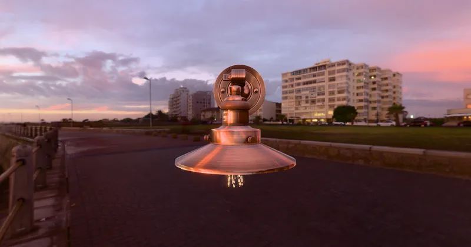

GLTF > GLTF Extensions > KHR_materials_anisotropy
Anisotropy Barn Lamp - RedGPU WebGPU Example
A barn lamp model showcasing anisotropic material properties.
비등방성(Anisotropic) 재질 속성을 보여주는 헛간 램프 모델입니다.

GLTF > GLTF Extensions > KHR_materials_anisotropy
A barn lamp model showcasing anisotropic material properties.
비등방성(Anisotropic) 재질 속성을 보여주는 헛간 램프 모델입니다.
